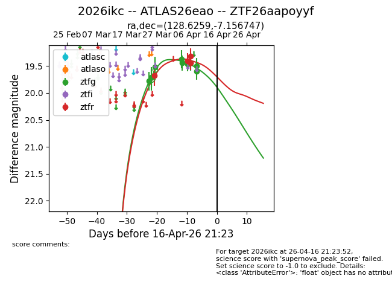
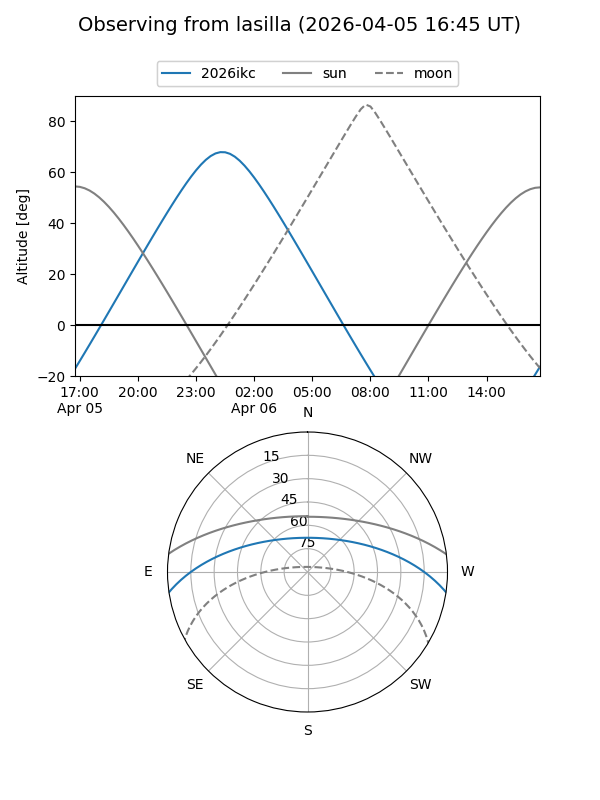
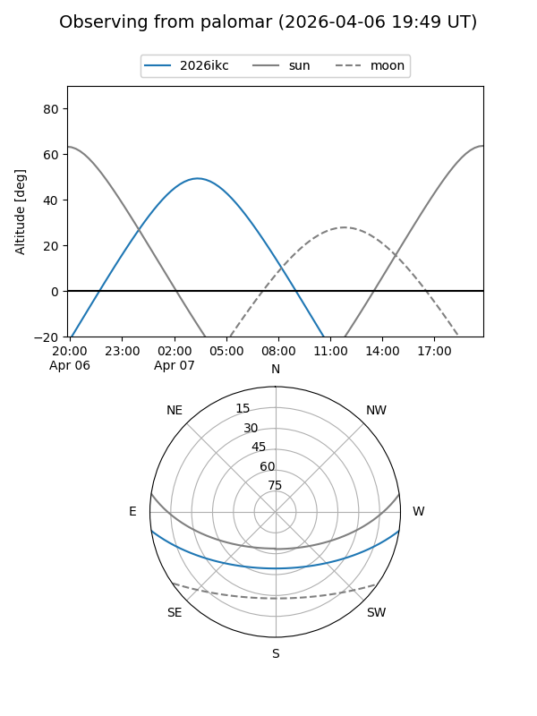

2026ikc
Target 2026ikc at 2026-04-16 21:29
Aliases and brokers:
FINK: link
Lasair: link
ALeRCE: link
TNS: link
YSE: link
alt names
ZTF26aapoyyf (ztf,fink_ztf)
2026ikc (tns,yse)
ATLAS26eao (atlas)
Coordinates:
equatorial (ra, dec) = 128.6259,-7.15675
equatorial (HMS+DMS) = 08:34:30.22,-07:09:24.29
galactic (l, b) = (231.9248,+19.09034)
Flags:
Photometry:
last ztfg=19.50, ztfr=19.31
9 ztfg, 4 ztfr detections
Lightcurve

Visibility


Additional plots